<meta charset="utf-8" dir="rtl">
<title>DriveDesk — أدر وكالتك لتأجير السيارات بالكامل من مكان واحد</title>
<link rel="stylesheet" href="_deck.css">
<script>document.documentElement.setAttribute('dir','rtl');document.documentElement.setAttribute('lang','ar');</script>
<style>body{direction:rtl}</style>

<!-- 1 -->
<section class="slide title dark" data-n="">
  <div class="kicker">نظام تشغيل تأجير السيارات</div>
  <h1>أدر وكالتك<br>لتأجير السيارات بالكامل<br><em>من مكان واحد.</em></h1>
  <div class="lead">
    الأسطول، والحجوزات، والعقود، والتوقيع الإلكتروني، والفوترة، والضريبة على القيمة
    المضافة — مجتمعةً في منصة واحدة سريعة ومتعددة اللغات، مصمَّمة لوكالات تأجير السيارات.
  </div>
  <div class="foot">DriveDesk &nbsp;·&nbsp; drivedesk.ma &nbsp;·&nbsp; تطوير Bangicode</div>
</section>

<!-- 2 -->
<section class="slide dark vcenter" data-n="02">
  <div class="kicker">المشكلة</div>
  <div class="quote">
    تعمل معظم وكالات التأجير بلوح أبيض، وملف Excel، ومجموعة على واتساب، وعقد على Word.<br><br>
    وينجح ذلك — <em>إلى أن تُحجز سيارة واحدة مرتين، أو يفوت تجديد التأمين، أو تصل
    مخالفة مرورية بعد أربعة أشهر ولا يستطيع أحد إثبات من كان يقود.</em>
  </div>
</section>

<!-- 3 -->
<section class="slide" data-n="03">
  <div class="kicker">ما هو DriveDesk</div>
  <h2>نظام واحد لكل ما تقوم به<br>الوكالة كل يوم.</h2>
  <div class="lead">
    سياراتك، وعملاؤك، وعمليات التأجير، والعقود، والضريبة — كلها مترابطة، فلا يُعاد
    إدخال شيء ولا يضيع شيء.
  </div>
  <div class="four" style="margin-top:auto;margin-bottom:6mm">
    <div class="stat"><div class="n">29</div><div class="l">وحدة عمل،<br>من الأسطول إلى الضريبة</div></div>
    <div class="stat"><div class="n">3</div><div class="l">لغات متاحة،<br>منها العربية بالكامل</div></div>
    <div class="stat"><div class="n">100</div><div class="l">صلاحية —<br>أنت تقرر من يرى ماذا</div></div>
    <div class="stat"><div class="n">1</div><div class="l">نطاق وقاعدة بيانات،<br>ملك لك وحدك</div></div>
  </div>
</section>

<!-- 4 -->
<section class="slide" data-n="04">
  <div class="kicker">كل صباح</div>
  <h2>النشاط كله، <em>في خمس ثوانٍ.</em></h2>
  <div class="two wide-r" style="margin-top:4mm">
    <div class="vcenter">
      <ul>
        <li><b>السيارات الخارجة اليوم</b> — وعدد سيارات أسطولك</li>
        <li><b>الإرجاعات المستحقة اليوم</b> — وكم منها متأخر</li>
        <li><b>الصيانة المستحقة</b> — قبل أن تتحول إلى عطل</li>
        <li><b>إيرادات اليوم</b> — ومجموع الشهر</li>
        <li><b>إجراءات فورية</b> — ما هو متأخر، بنقرة واحدة</li>
      </ul>
      <p style="margin-top:5mm;color:var(--soft)">
        أرقام تشغيلية، لا إحصاءات للزينة. لا حاجة للاتصال بأحد.
      </p>
    </div>
    <div>
      <div class="shot">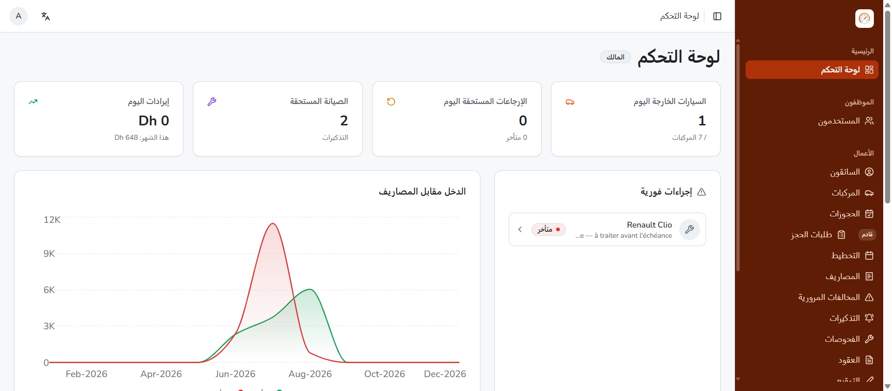</div>
      <div class="cap">لوحة التحكم — مع منحنى الدخل مقابل المصاريف على مدى اثني عشر شهرًا، وتوافر الأسطول على مدى سبعة أيام.</div>
    </div>
  </div>
</section>

<!-- 5 -->
<section class="slide" data-n="05">
  <div class="kicker">التخطيط</div>
  <h2>استغنِ عن اللوح الأبيض.</h2>
  <div class="shot" style="margin-top:3mm">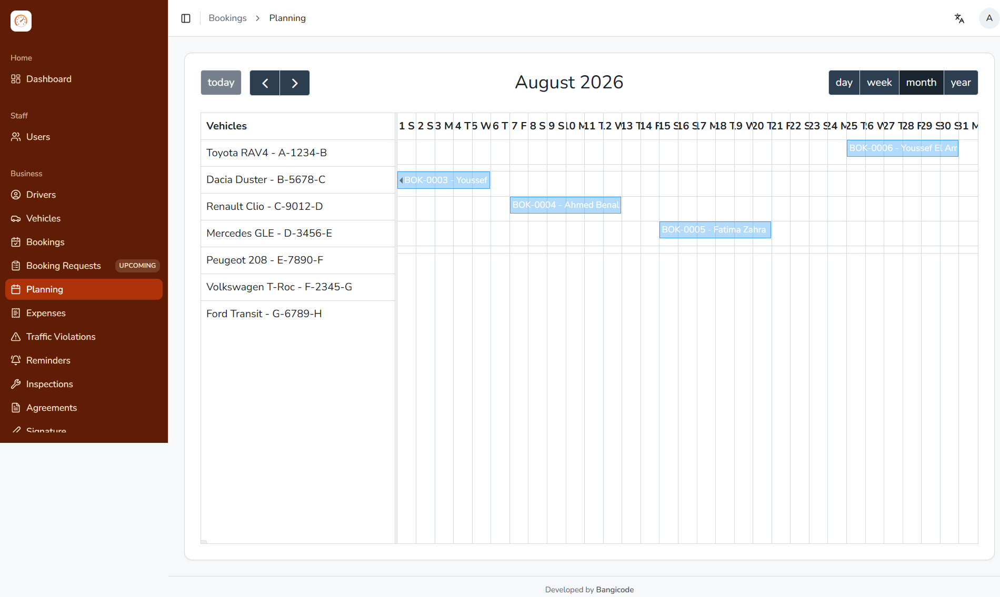</div>
  <div class="cap">سطر واحد لكل سيارة، وشريط واحد لكل عملية تأجير. عرض يومي أو أسبوعي أو شهري أو سنوي. كل فراغ هو سيارة كان بإمكانك تأجيرها.</div>
</section>

<!-- 6 -->
<section class="slide" data-n="06">
  <div class="kicker">الأسطول والعملاء</div>
  <h2>لكل سيارة ملف.<br>ولكل عميل ملف.</h2>
  <div class="two" style="margin-top:4mm">
    <div>
      <div class="shot">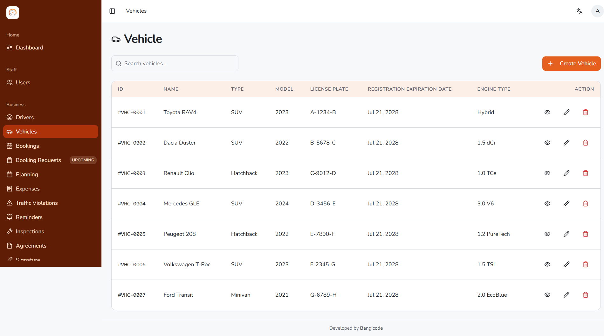</div>
      <div class="cap"><b>المركبات</b> — رقم اللوحة، والنوع، وتاريخ انتهاء التسجيل، والمحرك، وناقل الحركة، والوقود، وعدد المقاعد، وعدّاد المسافة، والسعر اليومي، والصورة والوثائق. ولا يُقبل تكرار رقم اللوحة.</div>
    </div>
    <div>
      <div class="shot">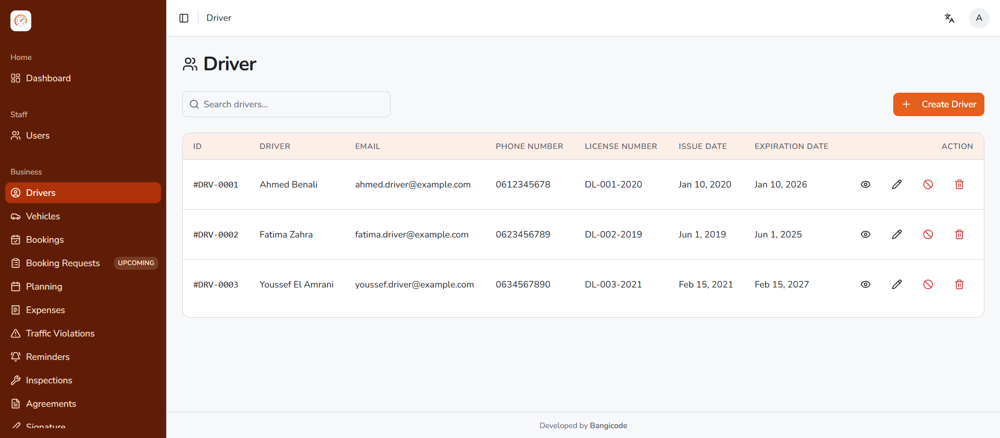</div>
      <div class="cap"><b>العملاء</b> — رقم رخصة السياقة مع تاريخي الإصدار والانتهاء، وبطاقة التعريف، ورقم ICE للشركة، ونسخ من وثائقهم داخل الملف. إضافة إلى <b>قائمة سوداء</b> تنبّه موظفيك قبل تسليم المفاتيح.</div>
    </div>
  </div>
</section>

<!-- 7 -->
<section class="slide" data-n="07">
  <div class="kicker">العقود</div>
  <h2>تُنشأ تلقائيًا، بهويتك، <em>وتُوقَّع على الشاشة.</em></h2>
  <div class="two wide-l" style="margin-top:4mm">
    <div>
      <div class="shot doc">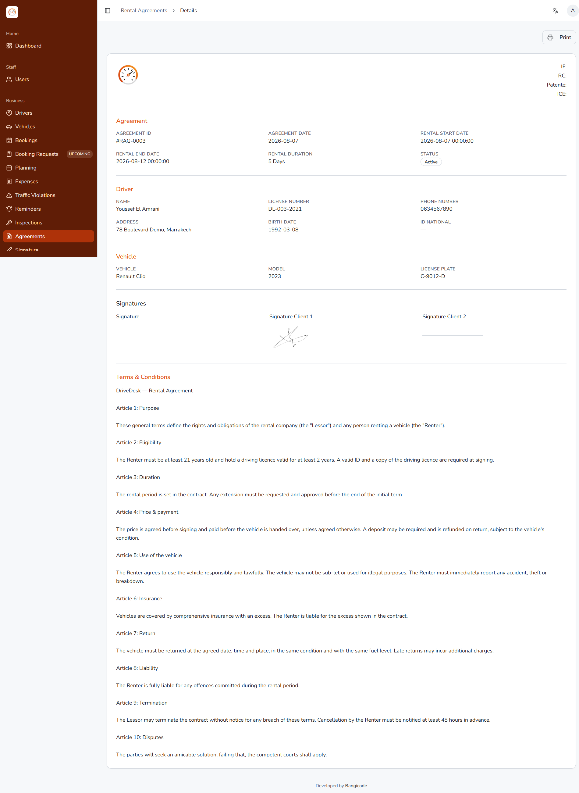</div>
      <div class="cap">العقد كما يُطبع — معرّفاتك القانونية، والسائقان، والمركبة، والتوقيعات، وشروطك كاملة.</div>
    </div>
    <div class="vcenter">
      <ul>
        <li>يُنشأ من الحجز — <b>دون إعادة إدخال أي بيانات</b></li>
        <li>أرقام <b>IF وRC وPatente وICE</b> في كل صفحة</li>
        <li>إمكانية إضافة <b>سائق ثانٍ</b> ببياناته الكاملة</li>
        <li><b>شروطك وأحكامك</b> الخاصة</li>
        <li>يُوقَّع <b>بالإصبع على جهاز لوحي</b>، ويُحفظ في ملف العميل</li>
      </ul>
      <p style="margin-top:5mm;color:var(--soft)">
        لا قوالب Word بعد اليوم. لا خانة منسية. ولا عقد ضائع في درج.
      </p>
    </div>
  </div>
</section>

<!-- 8 -->
<section class="slide" data-n="08">
  <div class="kicker">التحصيل</div>
  <h2>يُسعَّر ويُحتسب ويُفوتر <em>تلقائيًا.</em></h2>
  <div class="two wide-r" style="margin-top:4mm">
    <div class="vcenter">
      <ul>
        <li>الأيام والخدمات الإضافية ورسوم أماكن التسليم <b>تُحتسب تلقائيًا</b></li>
        <li><b>المبلغ دون ضريبة · الضريبة 20% · المبلغ الإجمالي</b> في كل حجز وكل فاتورة</li>
        <li>نقدًا، وتحويلًا بنكيًا، وبطاقة، وشيكًا — مع <b>قبول الدفعات الجزئية</b></li>
        <li>حالة الدفع <b>تتحدث تلقائيًا</b>: غير مدفوع ← مدفوع جزئيًا ← مدفوع</li>
        <li><b>سقف 5 000 درهم للدفع النقدي</b> مُدار نيابة عنك، بإيصالات مطابقة للقانون</li>
      </ul>
    </div>
    <div>
      <div class="shot">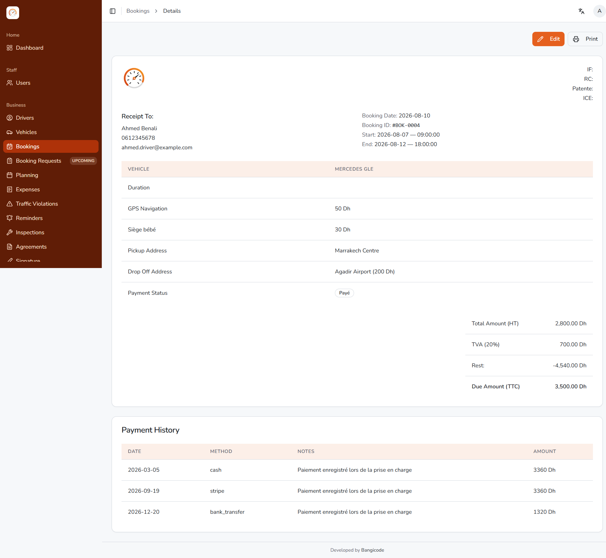</div>
      <div class="cap">حجز مُسعَّر من البداية إلى النهاية، مع سجل الدفعات كاملًا.</div>
    </div>
  </div>
</section>

<!-- 9 -->
<section class="slide" data-n="09">
  <div class="kicker">الضريبة على القيمة المضافة</div>
  <h2>سنتك كاملة، <em>مجموعة سلفًا.</em></h2>
  <div class="two wide-l" style="margin-top:4mm">
    <div>
      <div class="shot">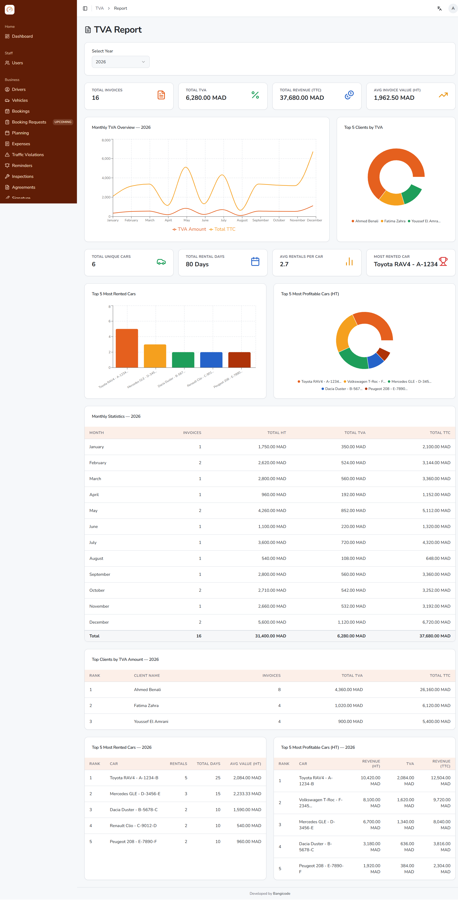</div>
    </div>
    <div class="vcenter">
      <ul>
        <li><b>الضريبة شهرًا بشهر</b> — المبلغ دون ضريبة، والضريبة، والإجمالي</li>
        <li><b>أفضل العملاء</b> حسب الضريبة وحسب رقم المعاملات</li>
        <li>السيارات <b>الأكثر تأجيرًا</b> و<b>الأكثر ربحية</b></li>
        <li><b>فواتير</b> مرقَّمة تسلسليًا، تحمل أرقام ICE وRC وIF الخاصة بك</li>
        <li>حمِّل فاتورة واحدة بصيغة PDF — أو <b>خمسين في ملف مضغوط واحد</b></li>
      </ul>
      <p style="margin-top:5mm;color:var(--soft)">
        الصفحة التي ترسلها إلى محاسبك. يومان من كل شهر، تُوفَّر.
      </p>
    </div>
  </div>
</section>

<!-- 10 -->
<section class="slide" data-n="10">
  <div class="kicker">المخالفات المرورية</div>
  <h2>تصل مخالفة في نونبر<br>عن واقعة حدثت في يوليوز.</h2>
  <div class="two wide-r" style="margin-top:4mm">
    <div class="vcenter">
      <p class="quote" style="font-size:15pt;margin-bottom:6mm">
        أدخل رقم اللوحة والوقت بالضبط.<br>
        <em>وسيخبرك DriveDesk من كان يقود.</em>
      </p>
      <ul>
        <li>يعثر على عملية التأجير الجارية <b>في تلك الدقيقة بالذات</b></li>
        <li>يصنّف التطابق: <b>مؤكَّد · مرجَّح · لا يوجد</b></li>
        <li>موظفوك هم من <b>يؤكد</b> — والنظام لا يقرر وحده أبدًا</li>
        <li>تتبُّع التحصيل حتى النهاية، مع المبلغ المسترد</li>
        <li>استيراد <b>دفعة كاملة من المخالفات من Excel</b></li>
      </ul>
    </div>
    <div>
      <div class="shot">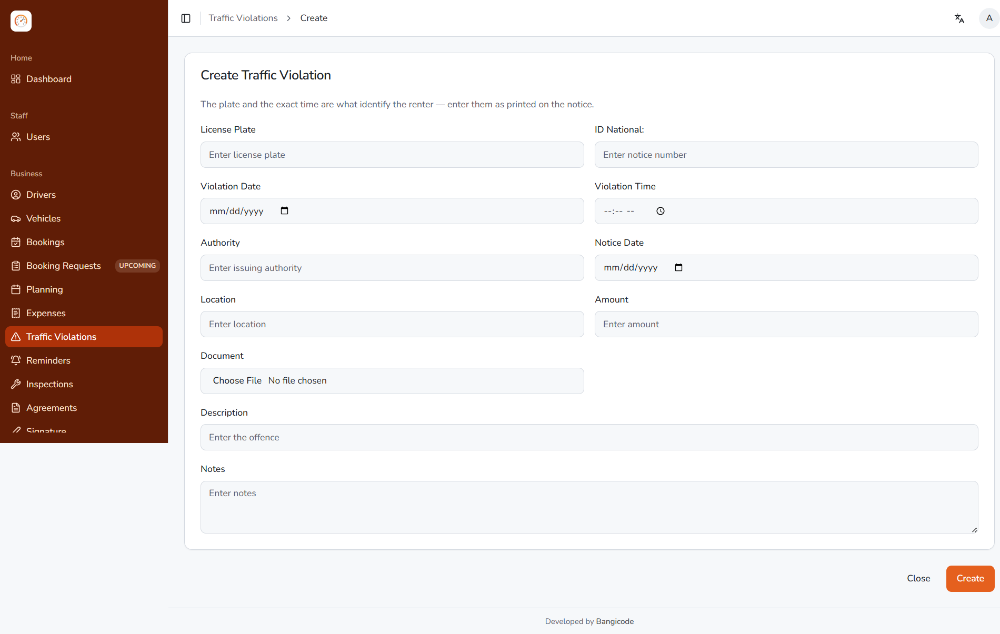</div>
      <div class="cap">أموال تشطبها معظم الوكالات اليوم من حساباتها.</div>
    </div>
  </div>
</section>

<!-- 11 -->
<section class="slide" data-n="11">
  <div class="kicker">قبل أن يكلّفك ذلك</div>
  <h2>لن ينتهي أي أجل دون إنذار.</h2>
  <div class="two" style="margin-top:4mm">
    <div>
      <div class="shot">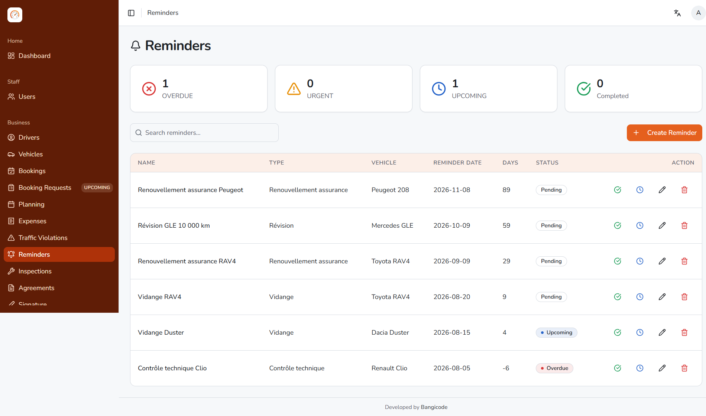</div>
      <div class="cap"><b>التذكيرات</b> — تجديد التأمين، وتغيير الزيت، والفحص التقني، والصيانة. تُصنَّف تلقائيًا إلى متأخر أو عاجل أو قادم أو قيد الانتظار، وتظهر على لوحة التحكم.</div>
    </div>
    <div>
      <div class="shot">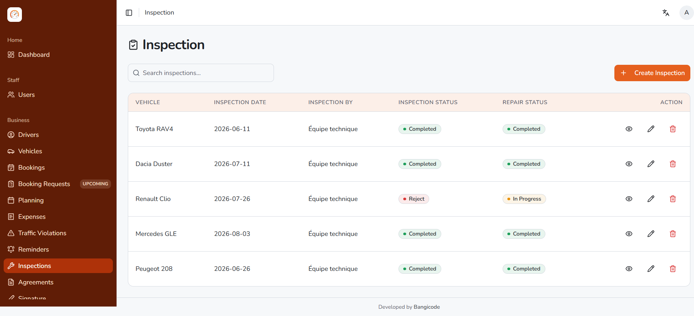</div>
      <div class="cap"><b>الفحوصات</b> — قائمة تحقق تضعها أنت مع ملاحظة لكل بند، وعدّاد المسافة، والنتيجة، وحالة الإصلاح وتكلفته، مرتبطة كلها بالمركبة.</div>
    </div>
  </div>
</section>

<!-- 12 -->
<section class="slide" data-n="12">
  <div class="kicker">التحكم</div>
  <h2>أنت تقرر من يرى ماذا.</h2>
  <div class="two wide-r" style="margin-top:4mm">
    <div class="vcenter">
      <ul>
        <li><b>المالك</b> — صلاحية كاملة</li>
        <li><b>المدير</b> — يدير التشغيل، دون الوصول إلى إعداداتك</li>
        <li><b>أدوار مخصَّصة</b> — تُركَّب من <b>100 صلاحية</b></li>
      </ul>
      <p style="margin-top:5mm;color:var(--soft)">
        يمكن لموظف الاستقبال إنشاء الحجوزات وطباعة العقود دون أن يرى رقمًا واحدًا
        من الإيرادات. والقوائم التي لا يملك صلاحيتها لا تظهر له أصلًا — كما يرفض
        الخادم تنفيذ العملية من جهته.
      </p>
      <p style="color:var(--soft)">
        كل عملية دخول تُسجَّل: من، ومتى، ومن أي جهاز.
      </p>
    </div>
    <div>
      <div class="shot">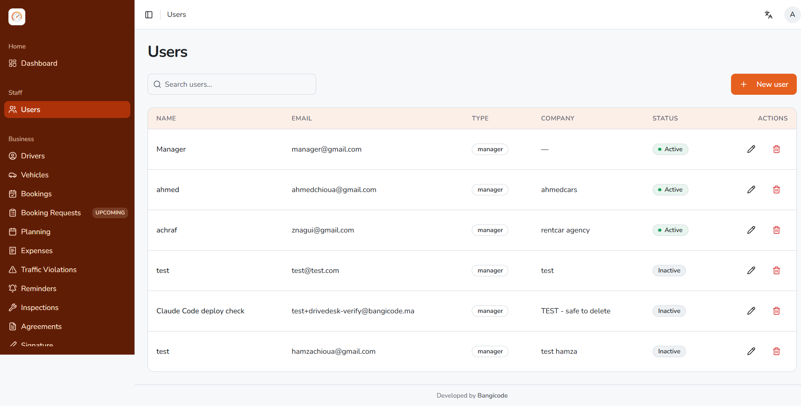</div>
      <div class="cap">حسابات الموظفين والأدوار والصلاحيات — تديرها أنت.</div>
    </div>
  </div>
</section>

<!-- 13 -->
<section class="slide" data-n="13">
  <div class="kicker">العلامة البيضاء</div>
  <h2>اسمك. نطاقك.<br><em>قاعدة بياناتك.</em></h2>
  <div class="two" style="margin-top:4mm">
    <div>
      <div class="shot">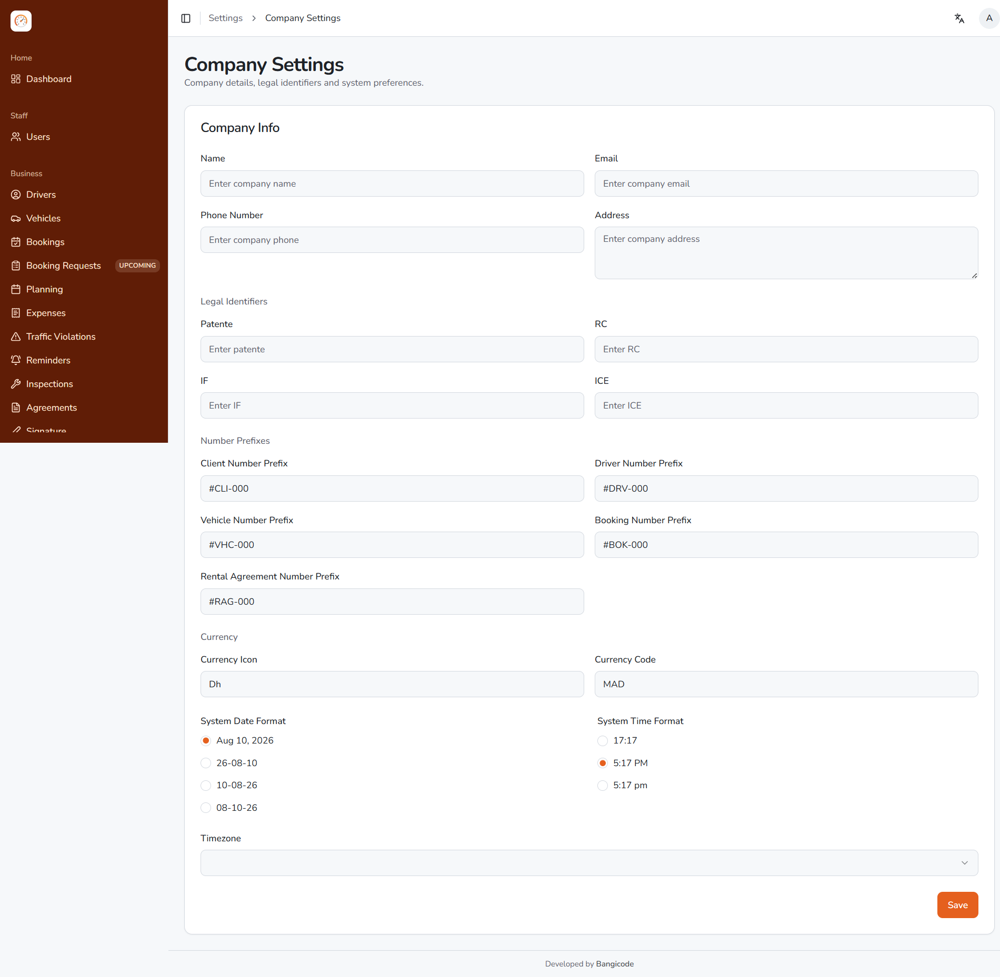</div>
      <div class="cap">معرّفاتك القانونية على كل وثيقة، وعملتك، وترقيمك الخاص.</div>
    </div>
    <div class="vcenter">
      <ul class="chk">
        <li><b>عنوان إلكتروني</b> خاص بك وشهادة SSL</li>
        <li><b>شعارك واسمك وألوانك</b> في كل مكان</li>
        <li>أرقام <b>ICE وRC وIF وPatente</b> على كل فاتورة وكل عقد</li>
        <li><b>تنصيب وقاعدة بيانات</b> خاصان بك — لا يُشاركان أبدًا</li>
        <li>يعمل على <b>استضافة cPanel عادية</b>، دون خادم مخصص</li>
        <li>تبقى على <b>النسخة التي تناسبك</b>، ما دمت ترغب في ذلك</li>
      </ul>
      <p style="margin-top:4mm;color:var(--soft)">
        لا شيء مما يراه عميلك يذكر اسم DriveDesk.
      </p>
    </div>
  </div>
</section>

<!-- 14 -->
<section class="slide" data-n="14">
  <div class="kicker">اللغات</div>
  <h2>العربية والفرنسية والإنجليزية —<br>مع <em>دعم كامل للكتابة من اليمين إلى اليسار.</em></h2>
  <div class="two" style="margin-top:4mm">
    <div>
      <div class="shot fit"></div>
      <div class="cap"><b>العربية</b> — القائمة على اليمين، والنص من اليمين إلى اليسار.</div>
    </div>
    <div>
      <div class="shot fit">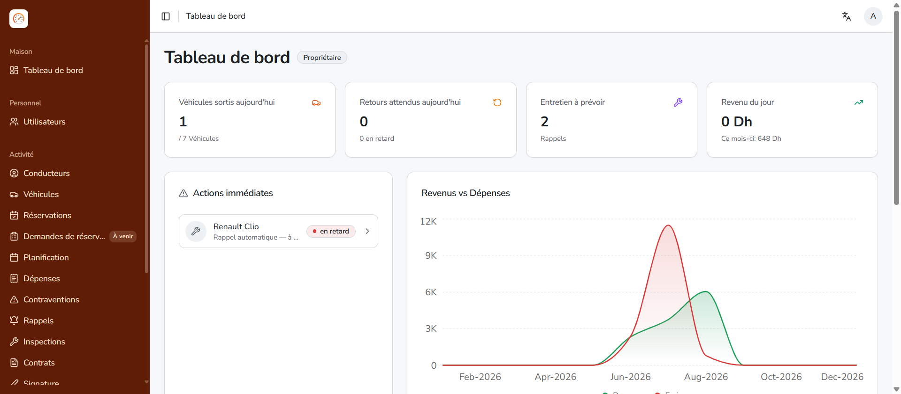</div>
      <div class="cap"><b>Français</b></div>
    </div>
  </div>
  <div class="note">تنقلب الواجهة بأكملها في الوضع العربي — اتجاه حقيقي من اليمين إلى اليسار، لا ترجمة مركَّبة على واجهة أجنبية. ويختار كل مستخدم لغته من الشريط العلوي دون أن يفرضها على غيره.</div>
</section>

<!-- 15 -->
<section class="slide" data-n="15">
  <div class="kicker">الانطلاق</div>
  <h2>ما يلزم لبدء التشغيل.</h2>
  <div class="three" style="margin-top:5mm">
    <div class="card">
      <h3>أنت تقدّم</h3>
      <p>شعارك ولون علامتك. معرّفاتك القانونية — ICE وRC وIF وPatente. شروط
        التأجير الخاصة بك. قائمة أسطولك. موظفوك والدور المسند إلى كل واحد منهم.</p>
    </div>
    <div class="card">
      <h3>ونحن نُنصّب</h3>
      <p>تنصيبك الخاص، وقاعدة بياناتك، ونطاقك وشهادة SSL، وهويتك البصرية، وشروطك،
        وأسطولك — مع استيراد السجل من Excel إن كان متوفرًا لديك.</p>
    </div>
    <div class="card">
      <h3>وتحصل على</h3>
      <p>نظام يعمل على عنوانك الخاص، وفريق مُدرَّب، وضريبة جاهزة منذ أول فاتورة.
        دون خادم مخصص، ودون برنامج تُنصّبه على حاسوبك.</p>
    </div>
  </div>
  <div class="note">
    تعتمد المدة على نطاقك وعلى سرعة وصول هويتك البصرية وشروطك إلينا — ونؤكد لك تاريخًا نهائيًا بمجرد توفرها.
  </div>
</section>

<!-- 16 -->
<section class="slide dark vcenter" data-n="">
  <div class="kicker">الخطوة التالية</div>
  <h1 style="font-size:34pt">شاهده<br><em>وسياراتك أنت بداخله.</em></h1>
  <div class="lead" style="max-width:180mm">
    نجهّز لك حسابًا تجريبيًا يضم أسطولك وشعارك ومعرّفاتك القانونية — لتعرضه على
    فريقك هذا الأسبوع.
  </div>
  <div class="foot">
    drivedesk.ma &nbsp;·&nbsp; تطوير Bangicode &nbsp;·&nbsp; bangicode.ma
  </div>
</section>
